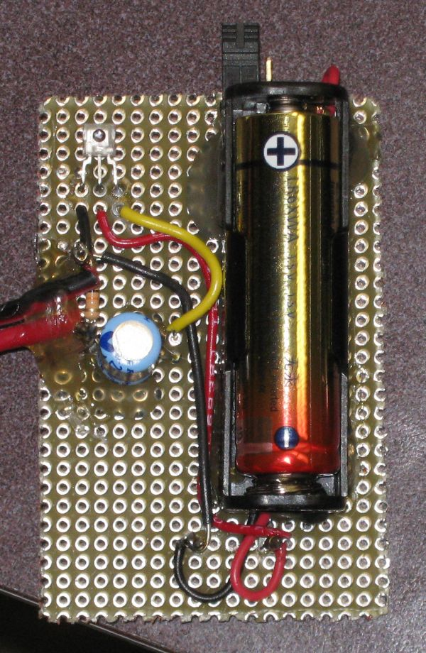

Pulsed Light Sensor using TSL250R-LF
I put together a little circuit and tested it in a dark room. This sensor is very sensitive to low light levels.
The circuit is intended to detect light that has been chopped into pulses (by fan blades). The output from the circuit can
be plugged directly into the line-in of a set of computer speakers, our Richmond megaphone or a computer.

My test was done as follows
- Overhead light off (and it was getting dark outside so little light was coming in the window.
- Since this sensor has a built in amplifier I plugged the input into the line-in of a regular set of
computer speakers (mic input was not needed). This should work the same then with the speakers you
originally suggested to me or going into the side jack on the megaphone.
- For this test I just used the LED built into the fan. It worked nicely. Since the fan chopper essentially makes an
on-off series of pulses there are lots of harmonics and good sound from the speakers (meaning even if the fundamental frequency is low
there is still good sound).
- The battery is there for the sake of the amplifier built into the sensor. The sensor does not actually work at 1.5 volts.
I have a bunch of DC-DC converters that were purchased for a different project. This battery holder came with the DC-DC converter
board attached (can't be seen here since it is under the holder). http://www.pololu.com/catalog/product/782/specs The converter
gives a regulated 5Volts out up to 100mA (the sensor needs less than 10 mA).
- The capacitor blocks DC because the line-in expects only AC. The resistor is just a little 10K load so the amp loading does
not change much if the unit is unplugged from the speaker and used with a scope only.
- The goop on the board is just some hot glue to help keep the bigger parts in place. More was added to hold the wires down
and cover the contacts on the back.
- In the photo a jumper can be seen on at the top an in the photo it is sitting on just one terminal. To power up the circuit
the jumper needs to cover both terminals and short them together. This works in place of an on off switch and is a little easier
than just pulling the battery out.
The board has also been tested with an overhead projector for the light source and megaphone as the speaker. Again a
fan was used to chop the light.
A diffraction grating was used to separate the light from the overhead into a spectrum. It was possible to pick-up
the chopped light signal past the red end of the spectrum (near IR).
Parts